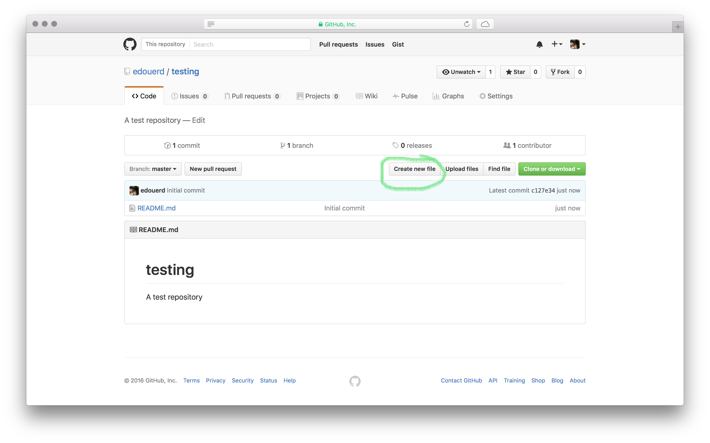

Okay, so you're logged into Github, and you see this page.
How do you begin contributing to Learning Gardens?

To begin, click on the + button on the top-right of the screen.
This is how you create a new repository. You can think of a repository as a single folder holding a single subject matter.

After creating a repo, you'll see this screen.

Fill out the items as needed, be sure to initialize the repo with a README, and click Create repository

You'll be taken to the 'home' of your repository, which displays any text files or folders are assets you've created within this space.
Note that any file named 'README.md/txt' automatically displays beneath the file/directory listing.
Typically, developers use a README.md to explain their repository, and how to work with the contents within, but for our purposes, a README.md can be used for explaining your learning group, linking to whatever you use for collaboration, and showing other how to contribute.
Read more about what might be good to include in your README.md here
Click Create new file, above the top of the directory, to create new textual files or folders(!)
Note the screen below: In the file name input, you can name a single file, or create files within directories by typing a word followed by a '/'. This can be undone by pressing backspace a bunch.

When you're done editing your file, creating your class index, or writing your syllabi, you can scroll down and click Commit new file.
It's generally a good practice to fill in the changes you've made or added in the fields provided, so other contributors can keep track of what you've done.

After you commit the file, you should be taken right to where it now exists in the directory.
Congrats! You've basically learned everything you need to know in order to begin creating your initial learning group docs.

An additional cool thing you can do via the web interface is add files by dragging and dropping from your computer to the browser. This works in just about every directory view, and in Github Issues, which I'll write about later.